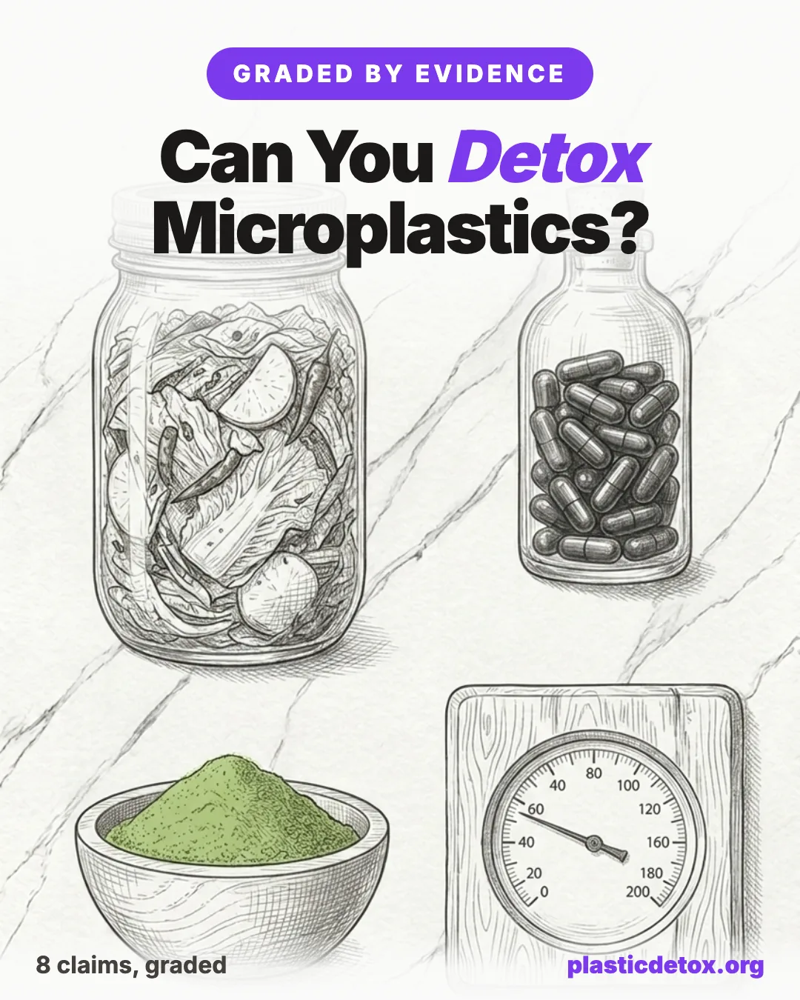

Can You Detox Microplastics? Every Popular Claim, Graded by the Evidence

The 30 Second Summary
- No human study shows you can remove plastic particles already in your tissues. Not with kimchi, fiber, saunas, charcoal, or any green powder. The science is genuinely early.
- The one trick to watch for is the chemical for particle swap. Removes BPA or lowers PFAS quietly becomes removes microplastics. They are different things.
- The kernels of truth are narrow. Kimchi research used an isolated strain in germ free mice. Sulforaphane helps excrete some plasticizer chemicals but only mobilizes particles into blood. Blood donation lowers PFAS, not particles.
- Charcoal, chlorella, and clay binders have zero in vivo evidence. The studies are all water treatment. Your gut is not a wastewater plant.
- What actually works is reducing intake, not removal. Your body already clears most ingested particles. The leverage is not loading more in.
- The highest impact swap is your water. Bottled water carries far more particles than filtered tap. A Blu water filter or an APEC ROES-50 reverse osmosis system removes the vast majority of microplastics.
Microplastics are real, and they are in us. Researchers have now found plastic particles in human blood, placenta, testes, and brain tissue, with one widely cited 2025 cadaver study estimating several grams of plastic per brain and higher levels in people who had dementia. Those specific figures are contested: the analytical method struggles to fully separate plastic from the brain's own lipids, and the dementia link cannot tell cause from effect, since a degraded blood brain barrier may simply let more particles in. Even with those caveats, the broader finding that plastic reaches human tissue is well supported. That is a legitimate reason to pay attention, and it is exactly the kind of anxiety that sells supplements.
In the last year, a wave of microplastic detox content has promised that kimchi, fiber, broccoli pills, saunas, charcoal, and assorted green powders will flush plastic out of your body. Some of these claims sit on top of genuinely interesting science. Most of them stretch that science past the breaking point. This guide goes through the popular claims one at a time and grades each against what the research actually shows.
Before the verdicts, one distinction does most of the work, and almost every misleading claim blurs it. There are three different things people lump together under microplastics:
- The plastic particles themselves (micro and nano sized fragments). These are physical particles your body mostly does not absorb and mostly passes in stool.
- Plasticizer chemicals like BPA and phthalates that leach out of plastics. These are chemicals, not particles, and your liver and kidneys process them.
- PFAS forever chemicals, a separate toxic class often discussed in the same breath. These bind to blood proteins and behave differently again.
A claim that works for one of these often gets marketed as if it works for all three. Watch for that swap. It is the single most common trick in this whole category.
Quick Verdicts
| Claim | Verdict | Why |
|---|---|---|
| Kimchi removes microplastics | Mostly misleading | Real finding, but it used an isolated strain, nanoplastics, and germ free mice. No human data. |
| Probiotic supplements remove microplastics | Promising, unproven | Works in mice and test tubes. Not yet shown in people. |
| Fiber removes microplastics | Plausible, mostly animal | Chitosan increased fecal excretion in rats, plus one tiny preliminary human study. Not yet robust. |
| Broccoli sprouts / sulforaphane detox plastic | Misleading | Mobilizes particles into blood, does not prove they leave. Helps excrete some chemicals. |
| Sweating / saunas sweat out microplastics | Misleading for particles | Cannot expel solid particles. May excrete some BPA and phthalates, on weak evidence. |
| Charcoal, chlorella, clay, citrus pectin binders | Unsupported in the body | Only water treatment studies exist. No human or animal in vivo evidence. |
| Donating blood or plasma | True, for PFAS | Real randomized trial, real effect, wrong target if you mean plastic particles. |
| Detox teas, more water, cleanse protocols | Debunked | No mechanism, no evidence. |
Kimchi Removes Microplastics
The headline comes from a real 2026 study by the World Institute of Kimchi in South Korea. But the study did not test kimchi the food. It tested a single isolated bacterial strain, Leuconostoc mesenteroides CBA3656, grown to a controlled dose. That strain bound about 87 percent of polystyrene nanoplastics in a dish, and held onto about 57 percent under conditions meant to mimic the gut, while a comparison strain collapsed to 3 percent. In germ free mice, animals given the strain passed roughly twice as many nanoplastics in their feces as untreated mice.
That is a genuinely interesting result. It is also three steps removed from eat kimchi to remove plastic. The study used a purified strain, not a fermented dish whose bacterial content swings wildly by recipe and ferment stage. It tested nanoplastics, the smallest fraction, not microplastics broadly. And the only removal evidence came from germ free mice, animals with no normal gut bacteria competing with the dosed strain, which is about the most favorable artificial setting possible. There is no human data. Eating kimchi for the documented benefits (it is a good fermented food) is fine. Eating it expecting to clear plastic from your body is not supported.
Probiotic Supplements Remove Microplastics
This is the more honest cousin of the kimchi claim. In a 2024 screening study, researchers tested 784 bacterial strains and found two (Lacticaseibacillus paracasei DT66 and Lactiplantibacillus plantarum DT88) that bound polystyrene well. In mice, those probiotics produced about a 34 percent increase in plastic excretion and a 67 percent drop in plastic left in the intestine.
So the mechanism (gut bacteria physically clumping particles so they pass in stool) has real support in animals. What it does not have is a single human trial showing the same thing happens in a person eating a normal diet with an established microbiome. Reasonable as a maybe, watch this space. Not something to pay a premium for today.
Fiber Removes Microplastics
There is a sensible logic here: insoluble fiber adds bulk, speeds transit, and can physically bind particles so they spend less time in the gut. The strongest animal evidence is a 2025 rat study (Tokai University, published in Scientific Reports) showing that chitosan, a fiber derived from shellfish shells, increased fecal excretion of polyethylene microplastics and reduced how long they sat in the gut.
As of mid 2025 there is also one small preliminary human study to point to. A crossover trial published in Foods (2025) gave 10 volunteers about 0.8 grams of chitosan and measured a rise in fecal microplastic counts. That is a genuine human signal, but it is tiny, preliminary, and far from confirmation: 10 people, one low dose, and a short window. It nudges chitosan from animal only toward maybe, but it does not establish that fiber clears the plastic already in your tissues.
And it is one specific fiber, chitosan, not fiber in general. It is promising and biologically reasonable, and a high fiber diet is worth eating for a dozen unrelated reasons. But ordinary dietary fiber is not the same as a concentrated chitosan dose, and the human evidence is still a single small study. File under helpful habit with an early human hint, not proven detox.
Broccoli Sprouts and Sulforaphane Detox Plastic
This one powers a lot of supplement marketing, so it is worth being precise. Sulforaphane (the compound in broccoli sprouts) is a legitimate activator of the body's NRF2 detox pathway, and it can trigger a cellular process called lysosomal exocytosis, where cells dump trapped contents outward. In a mouse model of a lysosomal storage disease, this cleared accumulated material and spared brain cells. Applying that to microplastics is biologically plausible.
The proof being sold, though, is a single self experiment (n of 1) in which one researcher took high dose sulforaphane and measured a large spike of microplastics in his own blood the next day, the highest the testing lab had ever recorded. Read that carefully. A spike in blood means particles were mobilized into circulation, not that they left the body. The researcher himself said elimination was never measured. So sulforaphane removes microplastics rests on evidence that it may briefly move them into your bloodstream, with the exit step unproven. Where sulforaphane does have solid human evidence is excreting certain plasticizer chemicals: Johns Hopkins broccoli sprout trials in China showed it increased urinary excretion of benzene and acrolein metabolites. That is a chemical effect, not particle removal. Useful supplement, oversold claim.
Sweating and Saunas Sweat Out Microplastics
Solid microplastic particles are far too large to leave through sweat glands. On that, the science is clear and there is no real dispute. So sweating out microplastics as particles is false.
The kernel of truth is chemical, not particle. A small set of older studies (the Genuis group, around 2011 to 2012) found BPA and phthalates in participants' sweat, sometimes at higher concentrations than in urine or blood. Those studies are small, have been criticized for possible contamination from skin and equipment, and one toxicologist described the amounts as trivial next to the body's overall load. So saunas may help excrete a little of the plasticizer chemicals, on shaky evidence, and do nothing for the particles themselves. Saunas have real cardiovascular and relaxation benefits. Plastic clearance is not a reason to buy one.
Charcoal, Chlorella, Clay, and Citrus Pectin Binders
This is the category to be most skeptical of, because the marketing leans hard on a specific sleight of hand. Yes, activated carbon removes microplastics from wastewater (up to about 95 percent in treatment studies), and chlorella algae can clump and remove polyethylene particles from water through bio flocculation. Those are environmental, water treatment findings. Your gut is not a wastewater plant.
There are no published human or animal in vivo studies showing that activated charcoal, chlorella, spirulina, bentonite or zeolite clay, or modified citrus pectin remove microplastics or even BPA from the body. Activated charcoal is genuinely useful, but for acute poisoning in an emergency room, taken right after ingestion, where it can also bind your medications and nutrients. Taking it daily as a microplastic cleanse has no evidence behind it and a real downside. When you see binds microplastics in water used to imply binds microplastics in you, that is the tell.
Donating Blood or Plasma
This is the one intervention with gold standard evidence, and it is worth knowing precisely what it does. A 2022 randomized controlled trial in JAMA Network Open (Macquarie University and Fire Rescue Victoria, 285 firefighters with elevated levels) found that regular plasma donation cut blood PFOS by about 24 percent and whole blood donation by about 11 percent over a year, while the no donation group did not change.
That is a real, replicated, randomized effect. But it is on PFAS, the forever chemicals that bind to blood proteins, not on plastic particles or BPA. So if someone cites blood donation as proof you can detox microplastics, they are again swapping one toxin class for another. If your concern is specifically PFAS and you have a high exposure history, this is a legitimate conversation to have with a doctor. It is not a microplastic particle solution.
Detox Teas, Drink More Water, and Cleanse Protocols
There is no mechanism by which a tea, a juice cleanse, or extra water selectively removes plastic particles, and no evidence that any of them do. Staying hydrated is good for you. It is not a detox.
What Actually Reduces Your Microplastic Burden
The unglamorous truth is that the intervention with the best evidence is not removal, it is reduction of intake. Your body already clears most ingested particles in stool. The leverage is in not loading more in. The highest impact, genuinely supported steps:
- Stop heating food in plastic. Microwaving and hot liquids in plastic containers release large numbers of particles. Use glass or stainless steel for anything hot. Glass containers with glass lids like these borosilicate glass sets, or stainless steel containers for kids and travel, are the simplest swap.
- Filter your tap water, and lean on tap over bottled. Bottled water carries far more particles than filtered tap, and a good carbon or reverse osmosis filter reduces what is there. A Blu water filter is the simplest place to start, the AquaTru countertop RO needs no plumbing, and the APEC ROES-50 is the best under sink value. See our full water filter guide.
- Cut back on canned and ultra packaged food, which is a meaningful source of both particles and plasticizer chemicals.
- Reduce plastic food storage and single use plastics in the kitchen, especially anything that gets scratched, abraded, or heated.
- Vacuum with a HEPA filter and dust regularly. Household dust is an underrated route, much of it from synthetic textiles and carpets. A sealed HEPA vacuum like the Miele Complete C3 traps fibers instead of recirculating them. More in our indoor air guide.
- Eat the boring healthy diet anyway. Plenty of fiber, fermented foods, and cruciferous vegetables. Not because they flush plastic, but because they support the systems that handle everyday chemical exposure, and the evidence for them on other health outcomes is strong.
How to Spot the Next Bad Claim
Every misleading claim in this space uses one of a handful of moves. Learn these and you can grade the next viral headline yourself:
- In vitro or animal, sold as human. A result in a dish, a rat, or a germ free mouse is a starting point, not a human outcome.
- Chemical swapped for particle. Removes BPA or lowers PFAS quietly becomes removes microplastics. Different things.
- Mobilization sold as elimination. Moving particles into the blood is not the same as getting them out of the body.
- Isolated compound or strain sold as the food. A purified strain at a controlled dose is not a jar of kimchi.
- Water treatment sold as gut treatment. What clumps plastic in a beaker says little about your intestine.
- Supports detox pathways. A weasel phrase that sounds clinical and commits to nothing measurable.
- A product at the end. When the article closes by selling you the exact blend it just praised, read everything above it again.
Bottom Line
Microplastics are a real exposure worth taking seriously, and the science on clearing them from the body is genuinely early and genuinely interesting. But as of now, no food, supplement, or sweat protocol has been shown in humans to remove microplastic particles already in your tissues. The honest, evidence backed strategy is to reduce what you take in and let your body do what it already does. Anyone promising more than that, especially anyone selling it, is ahead of the evidence.
This article summarizes published research for general information. It is not medical advice. If you have a specific exposure concern, talk to a qualified clinician.
Frequently Asked Questions
Can you actually detox microplastics from your body?
As of 2026, no food, supplement, or sweat protocol has been shown in humans to remove microplastic particles already in your tissues. Your body already clears most ingested particles in stool. The evidence backed strategy is to reduce what you take in (stop heating food in plastic, filter your tap water, cut canned and ultra packaged food) rather than to chase a removal protocol. Some interventions affect related but different things: blood and plasma donation lowers PFAS, and sulforaphane increases urinary excretion of certain plasticizer chemicals, but neither removes plastic particles.
Does eating kimchi remove microplastics?
Mostly misleading. The 2026 World Institute of Kimchi study did not test kimchi the food. It tested a single isolated bacterial strain, Leuconostoc mesenteroides CBA3656, which bound about 87 percent of polystyrene nanoplastics in a dish and roughly doubled nanoplastic excretion in germ free mice. That is three steps removed from eating kimchi: a purified strain, not a fermented dish; nanoplastics, not microplastics broadly; and germ free mice, the most favorable artificial setting possible. There is no human data. Kimchi is a good fermented food, but eating it to clear plastic is not supported.
Do saunas sweat out microplastics?
Not the particles. Solid microplastic particles are far too large to leave through sweat glands, so sweating out microplastics as particles is false. The kernel of truth is chemical: a small set of older studies found BPA and phthalates in sweat, but those studies are small, criticized for possible contamination, and describe trivial amounts next to the body's overall load. Saunas have real cardiovascular and relaxation benefits, but plastic clearance is not one of them.
Does activated charcoal or chlorella bind microplastics in your body?
There is no published human or animal in vivo evidence that activated charcoal, chlorella, spirulina, bentonite or zeolite clay, or modified citrus pectin remove microplastics or BPA from the body. The studies people cite are water treatment studies: activated carbon removes microplastics from wastewater and chlorella clumps particles in water. Your gut is not a wastewater plant. Activated charcoal is genuinely useful for acute poisoning in an emergency room, but daily as a cleanse it binds your medications and nutrients with no evidence of plastic removal.
Does donating blood remove microplastics?
It lowers PFAS, not plastic particles. A 2022 randomized controlled trial in JAMA Network Open found that regular plasma donation cut blood PFOS by about 24 percent and whole blood donation by about 11 percent over a year. That is a real, replicated effect, but it is on PFAS forever chemicals that bind to blood proteins, not on plastic particles or BPA. Citing blood donation as proof you can detox microplastics swaps one toxin class for another.
What is the single most common trick in microplastic detox marketing?
Swapping a chemical for a particle. People lump three different things under microplastics: the plastic particles themselves, plasticizer chemicals like BPA and phthalates that leach out of plastics, and PFAS forever chemicals. A claim that works for one of these often gets marketed as if it works for all three. Removes BPA or lowers PFAS quietly becomes removes microplastics. Watch for that swap. Other common moves: selling an in vitro or animal result as a human one, selling mobilization into the blood as elimination from the body, and selling a water treatment finding as a gut treatment.
What actually reduces your microplastic burden?
Reducing intake, not removal, has the best evidence. Stop heating food in plastic and use glass or stainless steel for anything hot. Filter your tap water and lean on tap over bottled. Cut back on canned and ultra packaged food. Reduce plastic food storage and single use plastics, especially anything scratched, abraded, or heated. Vacuum with a HEPA filter and dust regularly, since household dust is an underrated route. And eat the boring healthy diet anyway, not because it flushes plastic but because it supports the systems that handle everyday chemical exposure.
Related Articles
- Low Tox Myths, Debunked
Which low tox claims are real, which are exaggerated, and where to focus your effort. - How to Filter PFAS and Microplastics From Water
The highest impact reduction step, with the filters that actually remove particles and forever chemicals. - Supplements and Microplastics
The cleanest forms and brands, and why the supplement aisle is a near total testing gap for plastic. - Low Tox Mistakes That Backfire
The well meant swaps and protocols that add exposure or waste money instead of helping. - Microplastics and Fertility
What the research on plastic in blood, placenta, and testes actually shows, and what it does not. - How to Start Reducing Plastic Exposure
A practical priority guide for cutting plastic out of your daily routine, ranked by impact.